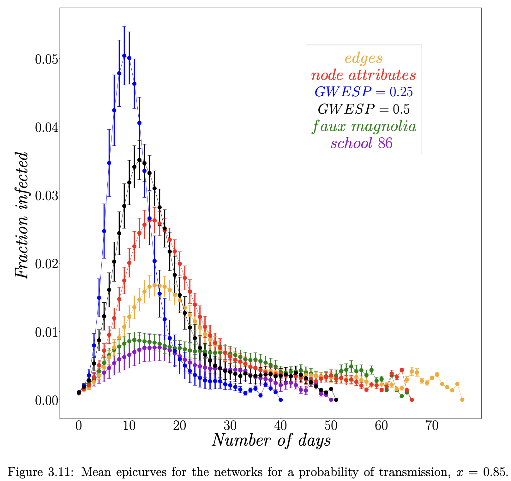

Susceptible-Infected-Recovered dynamics on contact networks vs statistical graph models
Simulated real-world epidemic outbreak and intervention scenarios on the National Longitudinal Study of Adolescent to Adult Health (Add Health) dataset using network reliability. Compared Susceptible-Infected-Recovered (SIR) dynamics on observed contact networks against four classes of exponential random graph models (ERGMs) to determine whether standard network statistics suffice to characterise epidemic outcomes.
The analysis demonstrated that models matching local network statistics can significantly overestimate infection numbers - sometimes by as much as 50%. This revealed that the attack rate depends on a complex mixture of structural properties beyond degree distribution, clustering, and centrality measures.
Furthermore, Birnbaum importance measures were applied to quantify individual edge contributions to epidemic potential, enabling the identification of critical connections for targeted mitigation strategies.
